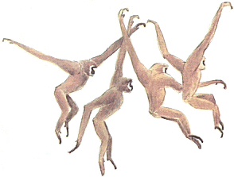
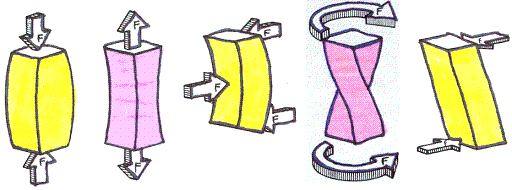

2.2 Skeletons are loaded by external forces
We use the term load when we say that a pressure (or force) is applied on an object. When we stand, our femur is loaded by the weight of our upper body pushing down onto the femur and the earth pushing back up. Loads come in differ flavors, or loading environments:
 Figure 2.3: Apatosaurus
Figure 2.3: Apatosaurus
 Figure 2.4: Gibbon brachiation
 Figure 2.5: Can you identify the type of loading in each of these structures?
- Compression has the effect of squeezing a structure. When an Apatosaurus stands, the limbs are loaded in compression because the weight of its (large!) body is pushing down on the limbs and a reactive force from the earth is pushing back up. That is, the limbs are squozen.
- Tension has the effect of stretching a structure. When a gibbon hangs from a tree limb, its humerus, radius, humeroulnar joint, and wrist joint are all loaded in tension. These are being pulled apart because the gibbon’s body weight is pulling these structures one way and the tree limb is pulling equally and oppositely in the other direction.
- Bending has the effect of bending a structure. The vertebral column between the front and hind limbs of the Apatosaurus is loaded in bending because the earth/limbs are pushing up at the ends of the column and the weight of the torso is pulling down the middle of the column.
- Torsion has the effect of twisting a structure. When a gazelle fleeing a cheetah turns on a dime, the limbs are loaded in torsion because the torso is turning to the side but the ground is resisting the limbs from spinning.
- Shear is the force due to materials sliding by each other. Shear is important in the joints where the ends of bones slide past each other and in the blood, where the moving blood loads the wall of the blood vessel in shearing.